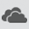

или OneDrive приостановлен
или OneDrive приостановлен Решение проблем с синхронизацией OneDrive
SharePoint Online Office для бизнеса Дополнительно...
Приносим извинения за проблемы с синхронизацией файлов в OneDrive. Чтобы воспользоваться помощью по началу работы, выберите значок из списка ниже.
Если отображается код ошибки, ознакомьтесь со статьей Что означают коды ошибок OneDrive
Если нужный значок OneDrive отсутствует в списке ниже, см. статью Что означают значки OneDrive
Windows
Ошибка синхронизации OneDrive для бизнеса
или Обработка изменений в OneDrive
Учетная запись OneDrive почти заполнена
Учетная запись OneDrive заполнена или заблокирована
Ошибка синхронизации OneDrive для бизнеса (старая версия)
Mac
Ошибка синхронизации OneDrive для Mac
Мобильное приложение
 Активные уведомления OneDrive на устройствах с Android
Устранение неполадок с OneDrive для Android
Устранение неполадок с OneDrive для iOS
Проводник Windows или macOS Finder
Обработка изменений в OneDrive
Не отображаются никакие значки OneDrive
Windows
На компьютере с Windows должен отображаться значок OneDrive в виде белого или синего облака в области уведомлений в правой части панели задач.
Возможно, вам потребуется щелкнуть стрелку Отображать скрытые значки рядом с областью уведомлений, чтобы увидеть значок OneDrive.

Если значка нет в области уведомлений, вероятно, приложение OneDrive не запущено. Нажмите кнопку Пуск, введите OneDrive в поле поиска, а затем выберите OneDrive в результатах.
Важно: Чтобы всегда получать последние функции и исправления, бесплатно скачайте и установите последнюю версию приложения OneDrive.
Mac
На компьютере Mac значки OneDrive в виде облака отображаются в верхней строке меню. Если вы не видите строку меню, может потребоваться настроить Общие параметры. За дополнительными сведениями обратитесь в службу поддержки Apple.
Если значок не отображается в меню состояния, вероятно, приложение OneDrive не запущено.
Важно: Чтобы всегда получать последние функции и исправления, бесплатно скачайте и установите последнюю версию приложения OneDrive.
Не выполнен вход в OneDrive
Файл со значком закрытого замка
OneDrive отображает значок висячего замка рядом с состоянием синхронизации, если для файла или папки установлены настройки, препятствующие синхронизации.
Узнайте больше об ограничениях при синхронизации файлов и папок.
Мигающий значок OneDrive на устройствах с Android
Значок OneDrive в виде облака может ненадолго появляться в уведомлениях Android в ходе обычного процесса отправки.
Узнайте больше о том, как использовать OneDrive на устройствах с Android.
Учетная запись OneDrive почти заполнена
Если вы видите этот значок, значит, ваше хранилище OneDrive практически заполнено.
Внимание: Ваша учетная запись OneDrive блокируется, если вы более трех месяцев превышаете ограничение, установленное для хранилища OneDrive.
Чтобы предотвратить превышение ограничения хранилища, можно воспользоваться тремя способами:
Учетная запись OneDrive заполнена или заблокирована
Если ваша учетная запись OneDrive заполнена или заблокирована, возможно, вы вышли из OneDrive на вашем компьютере.
Войдите на веб-сайт OneDrive и следуйте инструкциям на экране, чтобы отменить блокировку.
Подробные сведения см. в статье Что означает блокировка учетной записи OneDrive?
Нужна дополнительная помощь?
|
|
Справка в Интернете |
|
|
Поддержка по электронной почте Чтобы обратиться в службу поддержки OneDrive для бизнеса, на ПК с Windows или компьютере Mac щелкните значок OneDrive в области уведомлений либо строке меню, а затем выберите Другое > Отправить отзыв > Мне кое-что не нравится. OneDrive для бизнеса Также для администраторов могут быть полезными сообщество Tech Community по вопросам OneDrive для бизнеса, справка для администраторов OneDrive для бизнеса и обращение в службу поддержки Office 365 для бизнеса. |
|
|
Советы Все работает? Если вы обратились к нам и OneDrive снова работает, сообщите нам, ответив на электронное письмо, которое мы вам отправили. |